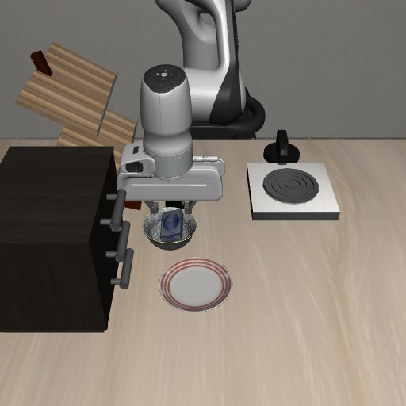
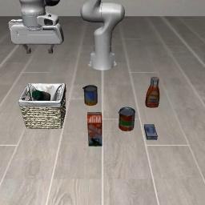
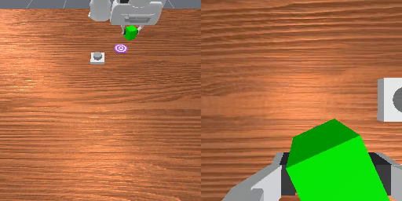

目标移动后，旧计划还有效吗？
从空间记忆案例，理解观察的时效性，以及为什么执行之后还要检查。
从一次抓取开始，学会让机器人理解任务、调用技能、检查结果，并在失败后继续行动。
首期 9 章 · 本地仿真实验 · 无需实体机器人
基础 Python、终端操作、简单向量运算。
运行机械臂，构建技能接口与可恢复的任务循环。
独立的简化 MuJoCo 环境；先理解，再接入模型。
按顺序完成前置知识，再把观察、技能与决策连起来。每章都有动手步骤、验收标准、故障排查和延伸阅读。
0 / 9 章已完成 · 进度保存在当前浏览器，可随时取消勾选。
完成本期后，再逐步加入记忆、主动感知、学习技能与系统评测。以下为规划，尚未开放正文。
不要只看机器人是否做完。尝试找出：它知道什么、何时决策、哪里出错，以及什么证据说明任务完成。案例与教学实验分开标注，保留各自的实现条件。

从空间记忆案例，理解观察的时效性，以及为什么执行之后还要检查。

把程序、技能与底层控制分开看，追踪决策怎样变成一次实际动作。

把自然语言要求变成明确的完成条件，区分动作执行与任务成功。
下载并解压实验包，在解压目录创建 Python 环境。第 2 章包含完整安装、环境检查与排错说明。
机械臂采用简化 SCARA 结构，抓取使用显式附着约束。它用来讲清任务逻辑，不代表真实夹爪的摩擦抓取能力。
查看安装与第一轮实验 →python -m pip install -r lab/requirements.txt
python lab/run.py doctor
python lab/run.py baseline
python lab/run.py agent --mode scripted